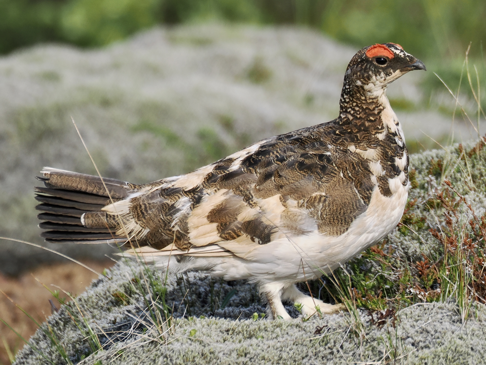
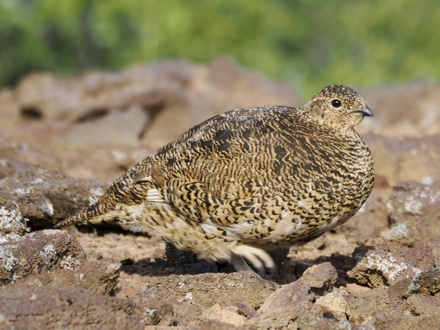

Rock Ptarmigan
Lagopus muta

Plump grouse with feathered legs. In winter is all white to blend in with the snow; in summer changes to have a mottled brown back. Male has red eye combs.

Female has less prominent eye combs, and entirely golden brown in summer. Found in rocky high mountains and tundra. Not to be confused with the viral "awebo" Willow Ptarmigan. I've seen too many Rock Ptarmigan videos from content farms using Willow Ptarmigan footage.